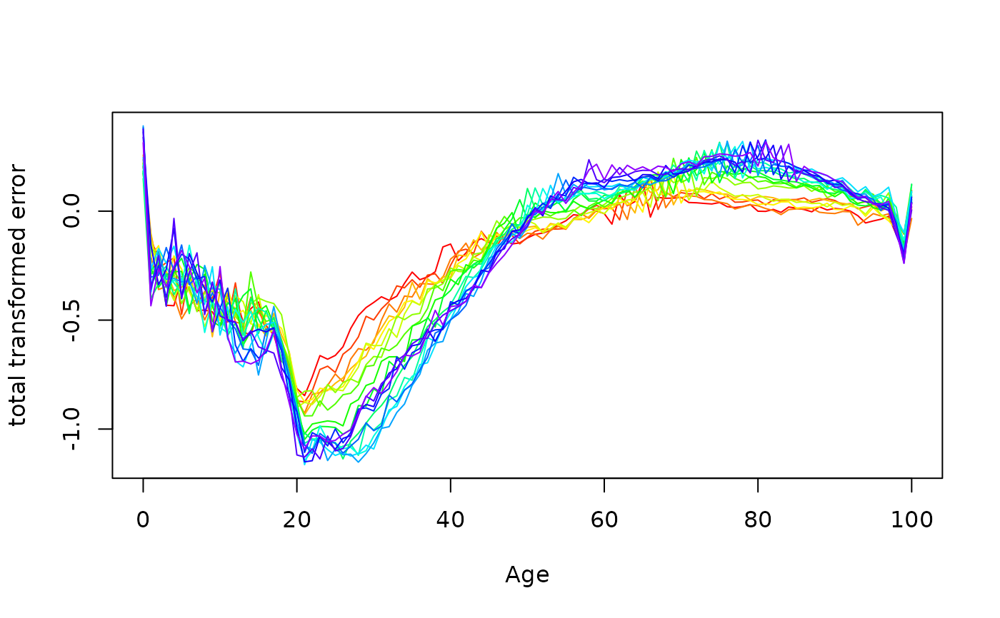

Plot differences between actuals and estimates from fitted demographic model
Source:R/fdm.R
plot.errorfdm.RdFunction produces a plot of errors from a fitted demographic model.
Usage
# S3 method for class 'errorfdm'
plot(x, transform = TRUE, ...)Arguments
- x
Object of class
"errorfdm"generated bycompare.demogdata.- transform
Plot errors on transformed scale or original scale?
- ...
Plotting parameters.
Examples
fr.fit <- lca(extract.years(fr.mort, years = 1921:1980))
fr.error <- compare.demogdata(fr.mort, forecast(fr.fit, 20))
plot(fr.error)
